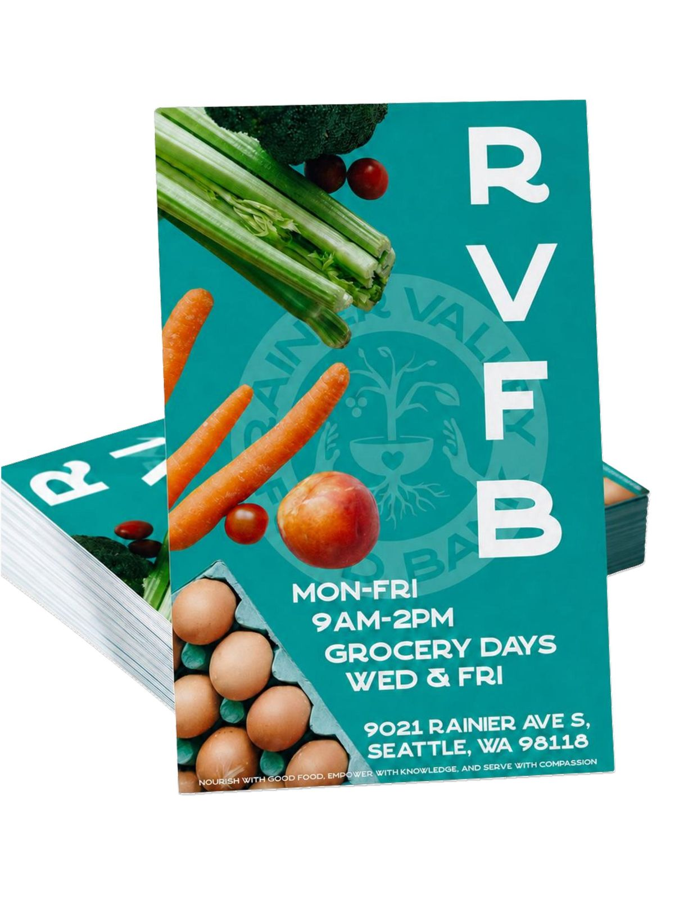
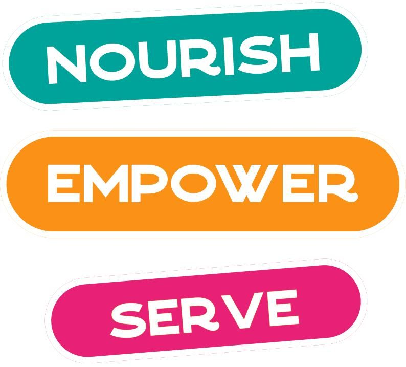
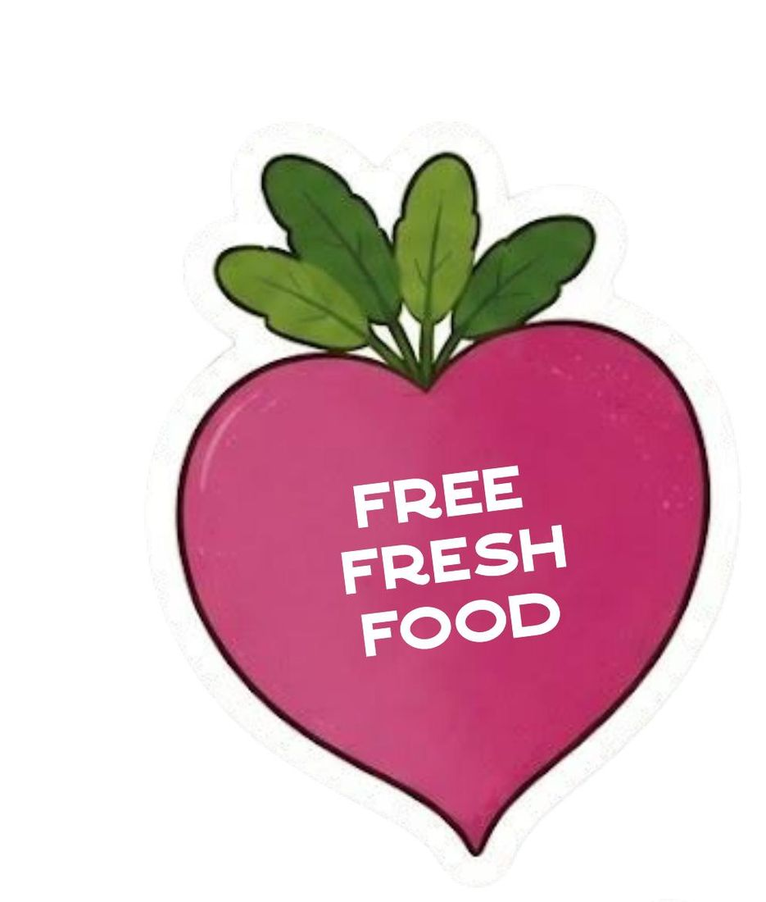
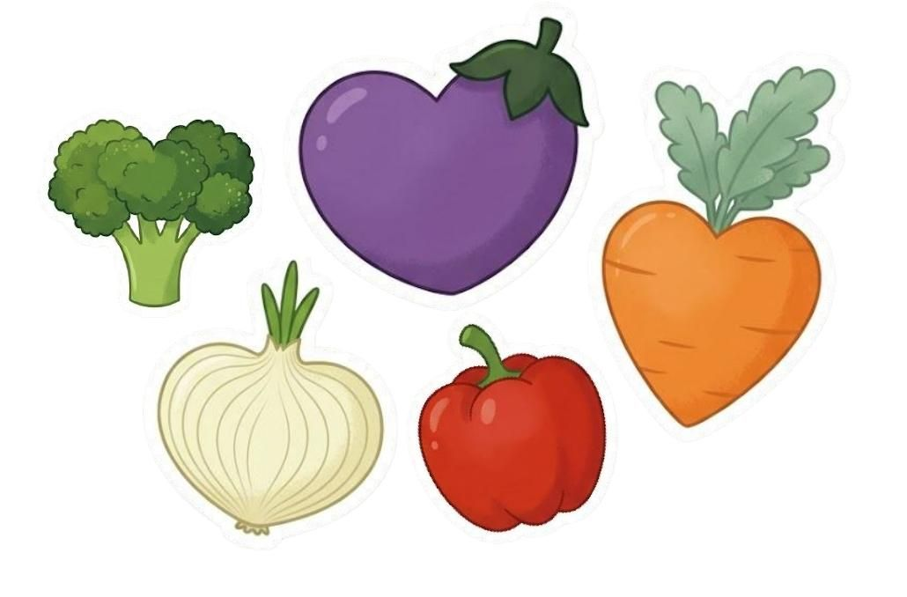
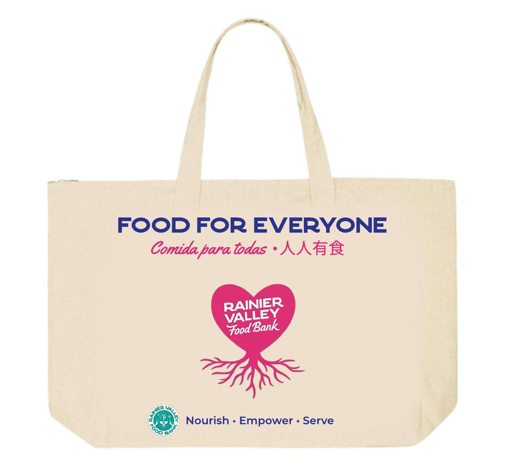

The question
An internal observation from RVFB staff prompted a paradox: people travelling from further away used the food bank more than the neighbors on its doorstep. The obvious explanations — supply, hours, marketing — didn't hold up.
How might we increase engagement, trust, and perceived accessibility among nearby residents who are not currently using RVFB's services?
We framed it as a problem of trust, visibility and cultural alignment rather than logistics. That framing decision shaped everything downstream — and it's the one I'd defend hardest.

How we worked
The barrier audit
A 90-minute on-site field study: ten rapid-fire interviews with staff and visitors while two of us walked the site photographing signage, entry points and wayfinding. We ran the field study before waiting for survey saturation — the observations then shaped every survey question we wrote.
Trust and cultural synthesis
Thirteen survey responses analyzed and visualised. Five persistent themes emerged, which became a six-profile audience segmentation framework and a journey map for the Seeker — the persona whose barrier is awareness rather than shame, and therefore the one outreach design can actually move.
Prototyping a low-barrier experience
Five in-depth interviews across three participant groups, then low-fidelity prototypes in Figma. We chose physical over digital: field observation and interview data both showed this community responds to visible, in-place, tactile materials at trusted locations.
Community validation
Structured concept feedback sessions with community members reviewing developed concepts. We called them Concept Study Feedback Sessions, not workshops — participants were evaluating, not generating, and precise framing mattered for informed consent.
What the data told us
Six findings, each triangulated against survey data and field observation. The one that reframed the project:
Discovery is entirely passive
None of our five participants discovered RVFB through RVFB. Every discovery was self-directed or accidental — a Google search, a spotted pamphlet, a visible queue at a farmers market. The organization was absent from the awareness path of the people who needed it most.
We were at a farmers market and saw a line of people, so we went over to see what it was and realized it was a food bank. We decided to stay.
Nini — community member
Stigma deters the first visit
Shame surfaced across all three participant groups, strongest among younger adults. What neutralised it wasn't messaging — it was company.
I offered to go with them so they did not have to walk in alone. Once we were there, we would make it fun, picking out different things together.
B — community volunteer
Language access is systemic, not an edge case
On-site signage was predominantly English-only despite a majority non-English-speaking visitor population. Non-English speakers face compounding barriers: materials they can't read, systems they can't navigate, staff who may not share their language.
We treated this as a constraint on our own method, not just a finding about RVFB. Our community survey went out in five languages besides English — Spanish, Chinese, Vietnamese, Amharic and Arabic — because a survey about language barriers that only exists in English answers its own question.
What we made
Three concept directions, each traceable to a specific finding. Every feature connects back to something a participant said.


Flyer · pole banner · transit ad — all built to RVFB's brand style guide

The sticker set
Small, cheap, and the part people actually take home. Flat vector illustration built to sit beside the brand without competing with it.





What I owned
Four of us ran this project and the PM role rotated by phase. I led during Phase 3 — the stretch where research turns into artifacts and recruitment either works or sinks you.
Recruitment at scale
I ran participant outreach and interview scheduling. We contacted 50+ organizations for survey distribution, which took responses from 12 to 21 in a single week. I moved scheduling to Calendly after manual coordination started eating days.
Multilingual access
Language access was a research finding, so it had to be a research practice too. I got the survey translated and published online in five languages — Spanish, Chinese, Vietnamese, Amharic and Arabic — distributed through a single Linktree.
Visual direction
I led the visual identity and the prototype suite across every deliverable — flyer, banner, transit ad, grocery bag, sticker set — all built to RVFB's own brand style guide rather than my own.
When a participant no-showed and went silent, I handled the follow-up and backfill rather than letting the slot disappear. Most of what a PM does on a project like this never appears in the final report, which is exactly why I'm listing it here.
Where it landed
Final mockups were presented to RVFB stakeholders and received positive response from marketing and senior leadership. RVFB has contacted King County Metro for transit advertising pricing and is exploring city approval for banner holders on Rainier Avenue light posts.
The full suite — pole banner, flyer, branded grocery bag, informative video and custom stickers — was displayed at the UW HCDE Capstone Showcase, where the project won the Engagement award in the Infrastructure, Society & Community category, judged across both bachelor's and master's teams.
What I'd do differently
- Our survey skewed heavily toward 18–24 year olds. A broader age and language distribution would have strengthened the quantitative half considerably.
- We'd pilot-test the survey instrument — several questions were accidentally left optional, creating avoidable gaps.
- We never interviewed RVFB's core visitor population: elderly, non-English-speaking adults. Their view of these barriers may differ from everything we documented.
- We'd treat faith organizations and childcare providers as research collaborators from the start, rather than as outreach targets at the end.
The proximity paradox is documented but not fully explained. Whether dignity-centred messaging alone can move someone from Avoider to first visit remains an open empirical question.
Read the full research
The complete two-quarter process — all findings, segments, journey map and references — is documented in its own site.